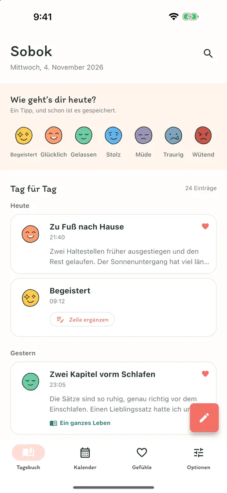
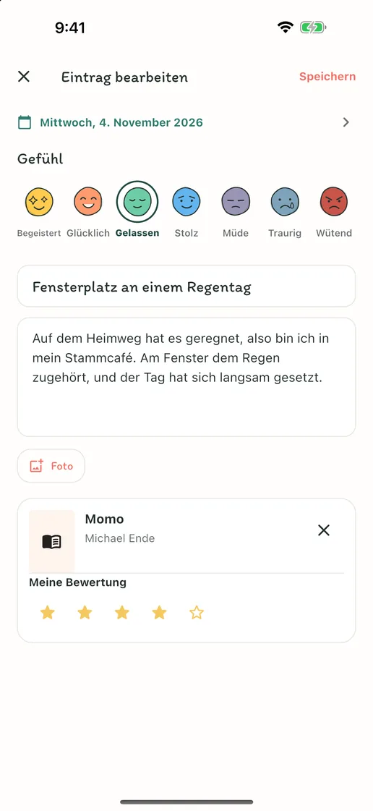
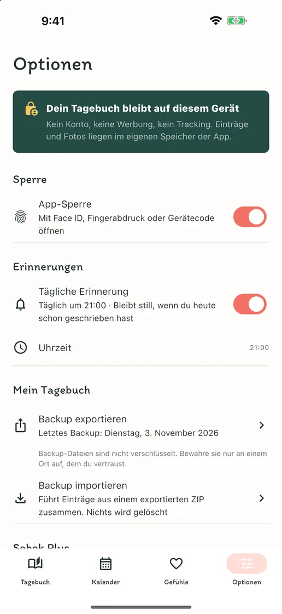
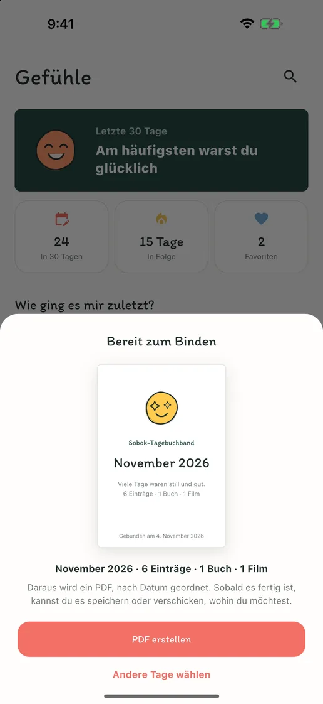
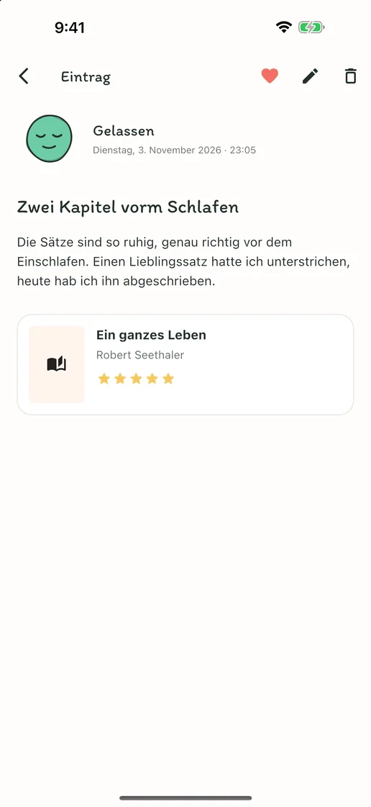
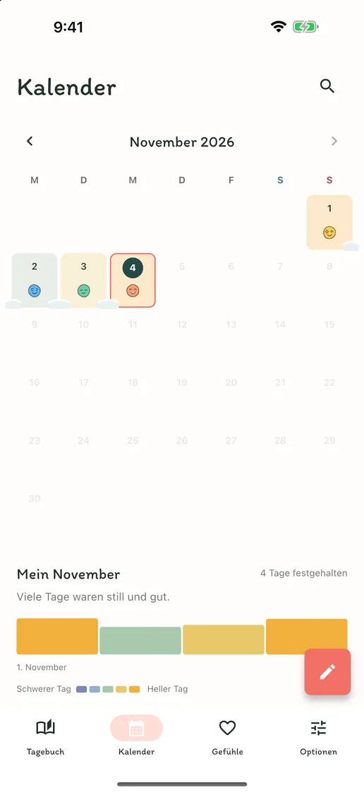
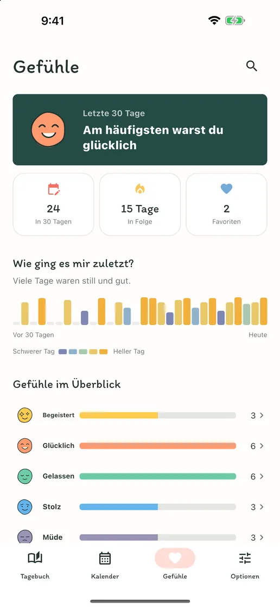

Das Gefühl des Tages, mit einem Tipp
Tippe auf eines von sieben Gefühlsgesichtern, und es wird zum Eintrag des Tages. Gibt es etwas zu erzählen, ergänze im selben Eintrag eine Zeile.
Gefühle, Worte, Bücher & Filme
Kein Konto, keine Werbung, kein Abo. Ein Tipp auf ein Gefühl hält den Tag fest; lange Texte, Fotos, Bücher und Filme passen in denselben Eintrag. Alles auf deinem Handy.
Bald im App Store und bei Google PlayKostenlos · In-App-Kauf · iPhone und Android · English · Deutsch · Tiếng Việt · Español · Bahasa Indonesia · 日本語 · 简体中文 · 繁體中文 · ไทย · Português · Français · 한국어


Schreib, so viel du magst
An Tagen ohne viele Worte hält ein Tipp auf ein Gefühl den Tag fest. An Tagen, an denen du schreiben möchtest, passen Titel, lange Texte, Fotos und Notizen zum gerade gelesenen Buch oder zum gerade gesehenen Film in einen Eintrag.
Tippe auf eines von sieben Gefühlsgesichtern, und es wird zum Eintrag des Tages. Gibt es etwas zu erzählen, ergänze im selben Eintrag eine Zeile.
Titel, lange Texte, Fotos und eine Bewertung – füge nur hinzu, was du an dem Tag möchtest. Such nach dem Buch, das du gerade gelesen hast, oder dem Film, den du gerade gesehen hast, oder trag den Titel selbst ein.
An jedem Tag, an dem du schreibst, legt sich sein Gefühl auf den Kalender, und Tage in Folge wehen zusammen wie Schnee. Sieh auf einen Blick, welche Wochen gut und welche schwer waren.
Ein Blick in die App
„Sobok-sobok“ ist im Koreanischen der Klang von Schnee, der sich leise anhäuft – so sammeln sich hier deine Tage, einer nach dem anderen.





Keine Anmeldung, keine Werbung, kein Tracking. Dein Tagebuch wird nur auf deinem Gerät gespeichert, und du kannst alle Einträge und Fotos als ZIP-Datei exportieren und auf einem neuen Gerät zurückholen. Schreiben, Suche, Kalender, App-Sperre und Backup sind kostenlos; nur Sobok Plus, das deine Einträge zu einem Tagebuchband als PDF bindet, ist ein einmaliger Kauf.